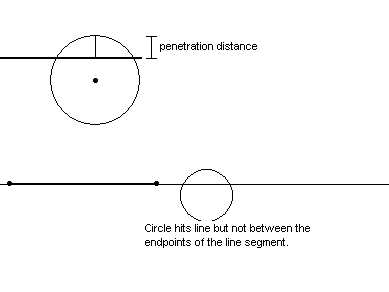
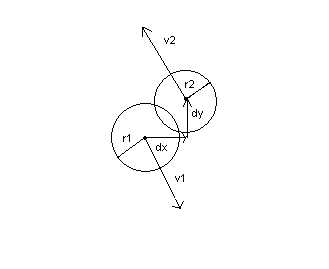
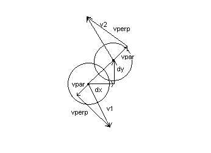

For the purpose of collision detection, there are several algorithms that are used. There are three basic types of objects which can interact via collision in the simulation:
Because of the algorithms I've chosen, there are four situations that must be taken care of:
Situation 1: Circle collides with line
This situation is the simplest to look for. If at the end of a timestep, the distance between the center of a circle and a line segment is less than the radius, and the closest point on the line segment is actually between the ends, then there was a collision.

Calculation of the time of impact is very simple. The time relative to the present that the impact occurred was the penetration distance divided by the normal velocity.
Situation 2: Circle collides with circle
This situation is also very easy to detect. If the distance between two circles is less than the sum of their radii, then clearly they are overlapping.
Finding the exact time of impact is a little harder. One must solve the equations of motion such that the distance between the two moving points (which are assumed to undergo no acceleration during the tick) are exactly r1+r2 apart in distance. It turns out that there is a very nice closed form solution to this problem, given in the equations:
dx = circle1->x - circle2->x;
dy = circle1->y - circle2->y;
dvx = circle1->vx - circle2->vx;
dvy = circle1->vy - circle2->vy;
a = dvx*dx+dvy*dy;
b = dvx*dvx + dvy*dvy;
rs = (circle1->r + circle2->r)*(circle1->r + circle2->r);
discriminant = a*a-b*(dx*dx+dy*dy-rs);
t = -(a+sqrt(discriminant))/b;
Hopefully these formulae are clear, the first four are just calculating everything in terms of a relative coordinate system.

Situation 3: Fast circle collides with line
This situation is a bit more complex than it would seem. Because it's quite possible for a fast circle to jump between one side of a wall and appear on the other during one step of the simulation. Because of this, we cannot use geometrical overlap for collision detection. Instead, we must calculate the projected time of collision, and then see if that falls within the last tick. A sign trick is used to prevent unnecessary division in the case that the collision is in the future (and the time is positive). The formula is just t = d/v, where d is distance and v is the velocity in the direction normal to the wall.
Situation 4: Fast circle collides with circle
This case uses the same algorithm as a circle colliding with a circle, however instead of looking for overlap, it simply tries to find a collision time, if it is a real number, and then it checks it to see if it occurred during the last timestep. The same formulae are used. The discriminant must be positive or 0 to get a real answer for the time, and the negative root is always taken, of course (since we are not interested in the future, only the past).
In the case of a collision with a wall, the velocity of a circle (robot or ball) is reversed in the direction normal to the wall, with an optional reduction (an absorption of kinetic energy, akin to real life situations).
In the case of two circles colliding, the relative velocity of one of the circles is broken down into two vectors, the velocity component parallel to the line between their centers, and the velocity component perpendicular to that line. The parallel components are then put into the one-dimensional equations of collision for two points of different masses.
The following formulae are used:
dx = circle1->x - circle2->x;
dy = circle1->y - circle2->y;
k = 1.0/sqrt(dx*dx+dy*dy);
dx = dx*k;
dy = dy*k;
dot1 = circle1->vx*dx+circle1->vy*dy;
dot2 = circle2->vx*dx+circle2->vy*dy;
v_parallel_x1 = dot1*dx;
v_parallel_y1 = dot1*dy;
v_parallel_x2 = dot2*dx;
v_parallel_y2 = dot2*dy;
v_perp_x1 = circle1->vx-v_parallel_x1;
v_perp_y1 = circle1->vy-v_parallel_y1;
v_perp_x2 = circle2->vx-v_parallel_x2;
v_perp_y2 = circle2->vy-v_parallel_y2;
m1 = circle1->m;
m2 = circle2->m;
c1 = 1/(m1+m2);
dm = (m1-m2);
circle1->vx = c1*(dm*v_parallel_x1 + 2*m2*v_parallel_x2) + v_perp_x1;
circle1->vy = c1*(dm*v_parallel_y1 + 2*m2*v_parallel_y2) + v_perp_y1;
circle2->vx = c1*(2*m1*v_parallel_x1 - dm*v_parallel_x2) + v_perp_x2;
circle2->vy = c1*(2*m1*v_parallel_y1 - dm*v_parallel_y2) + v_perp_y2;
This equation applies only in the case that the collision is completely elastic. It is planned to add significant amounts of in-elasticity to the collisions, such that the final relative velocities would be significantly less.

Kicking is accomplished by imparting a specified velocity on the ball in the direction the robot is facing, provided that the ball is sufficiently close to the front of the robot to receive a kick. A kick counter is used to control how frequently the robot can kick.
Dribbling is somewhat hacked. If a ball touches a robot in the dribbling zone while dribbling is on, it will become attached, and will be dragged around (forced to attain a velocity that in theory keeps the ball exactly the same place in respect to the robot next timestep, despite any translational or rotational motion).